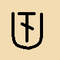

| 針法名稱 | 符號 | 鎖針的高度 | 針法步驟及注意事項 |
玉針 (棗形針) |
3個鎖針高度 | 掛1針，穿洞，鉤出，收2針(此時鉤針上有2個圈)， 再掛1針，穿原洞，鉤出，收2針(此時鉤針上有3個圈)， 再掛1針，穿原洞，鉤出，收2針(此時鉤針上有4個圈)， 收4針，接著鉤2針鎖針，再開始鉤下一個玉針。 ◎間隔至少2個鎖針再鉤下一個玉針 |
|
| 長針之交叉針 | 3個鎖針高度 | 掛1針，穿第2洞，鉤出，收2針，再收2針， 掛1針，穿第1洞，鉤出，收2針，再收2針。 ◎因交叉易使長針變緊，鉤時宜將線拉鬆些 |
|
| 爆米花針 | 3個鎖針高度 | 掛1針，穿洞，鉤出，收2針，再收2針， 再掛1針，穿原洞，鉤出，收2針，再收2針， 如此反覆在同一個洞鉤5個完整的長針，鉤完後將最後的環圈拉鬆些，鉤針抽出，從第一個長針上方穿洞(由前往後)，把第5個長針上方的環圈鉤出後，再鉤1針鎖針縮緊(凸面向上)，接著鉤3個鎖針再開始下一個爆米花針。 ◎間隔至少3個鎖針再鉤下一個爆米花針 |
|
| 十字長針 | 4個鎖針高度 |
掛2針，穿第1洞，鉤出，收2針， 再掛1針，穿第4洞，鉤出，收2針(此時鉤針上有4個圈)， 收2針(此時鉤針上有3個圈)，收2針(此時鉤針上有2個圈)， 再收2針(此時鉤針上有1個圈)，接著鉤2針鎖針，掛2針， 在交叉位置上穿洞，鉤出，收2針，再收2針。 |
|
| 十字長長針 | 6個鎖針高度 | 掛4針，穿第1洞，鉤出，收2針，再收2針， 再掛2針，穿第4洞，鉤出，收2針(此時鉤針上有6個圈)， 收2針(此時鉤針上有5個圈)，收2針(此時鉤針上有4個圈)， 收2針(此時鉤針上有3個圈)，收2針(此時鉤針上有2個圈)， 再收2針(此時鉤針上有1個圈)，接著鉤2針鎖針，掛2針， 在交叉位置上穿洞，鉤出，收2針，收2針，再收2針。 |
|
| 短針環針 | 1個鎖針高度 | 在鉤之前，用左手中指壓住線成環圈於織物後方(環圈大小視設計而定)，接著照短針的鉤法，穿洞，鉤出，收兩針。 ◎此針法之特色為背面有空環圈，像流蘇狀 |
|
| 長針環針 |  | 3個鎖針高度 | 掛1針，用左手中指壓住線成環圈於織物後方，接著照長針的鉤法，穿洞，鉤出，收2針，再收2針。 ◎以左手中指調整環圈的大小，環圈大小視設計而定 |
結粒針 (狗牙針) |
1個鎖針高度及邊緣凸起狀 | 鉤短針，在要結粒處鉤3針鎖針，穿基座的洞，鉤出的線直接收完，接著鉤數個短針，在要結粒處再開始鉤結粒針。 ◎常用在邊緣的針法，兩個結粒針之間的間隔視設計而定 |
|
| 逆短針 | 1個鎖針高度 | 方向由左向右，先穿洞，鉤針的尖鉤朝下鉤出，收2針。 ◎此針法用於織物最末排的邊緣，有捲縫的效果 |